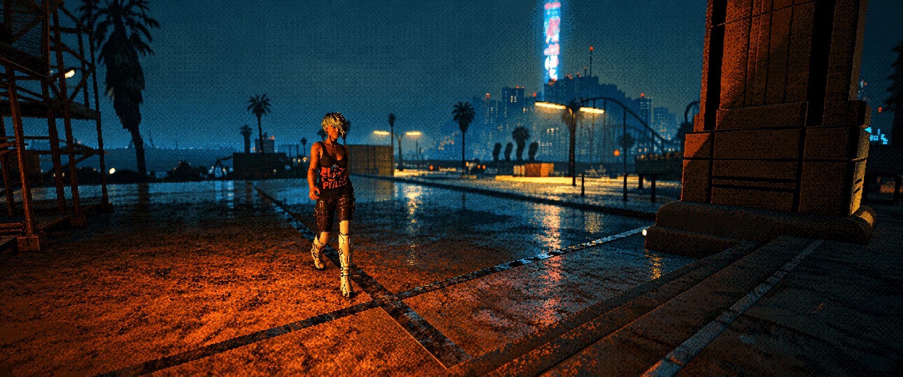

GAMING
:: worlds worth returning to ::
Some games are finished and forgotten. Others become places you keep returning to. GAMING is about the latter: Night City, the frontier of Red Dead Redemption 2, years of Pokémon GO, and the older PC and console worlds that shaped how I think about games in the first place. Screenshots, observations, hardware, nostalgia and whatever else is worth preserving — less a review section than a personal save file.
:: gaming avatars ::
:: gaming memory alpha ::
:: RECENTLY PLAYED ::
LOADING
:: FROM THE LIBRARY ::
LOADING
:: RECOGNITION ::
LOADING
:: OLD ACCOUNT ENERGY ::
LOADING
:: legal / platform note ::
Unofficial personal fan and archive content. This site is not affiliated with or endorsed by CD PROJEKT RED, Rockstar Games, Take-Two Interactive, Valve / Steam, Microsoft / Xbox or Twitch. Steam, Xbox and Twitch names and trademarks, and all game names, characters, artwork and other game content, remain the property of their respective rights holders. Platform statistics shown here are manually maintained snapshots and may not reflect the current state of the linked accounts.